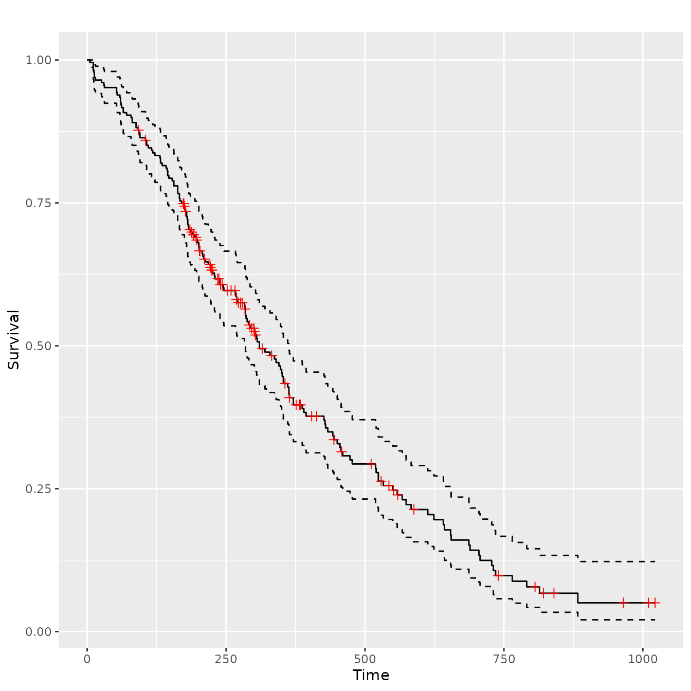
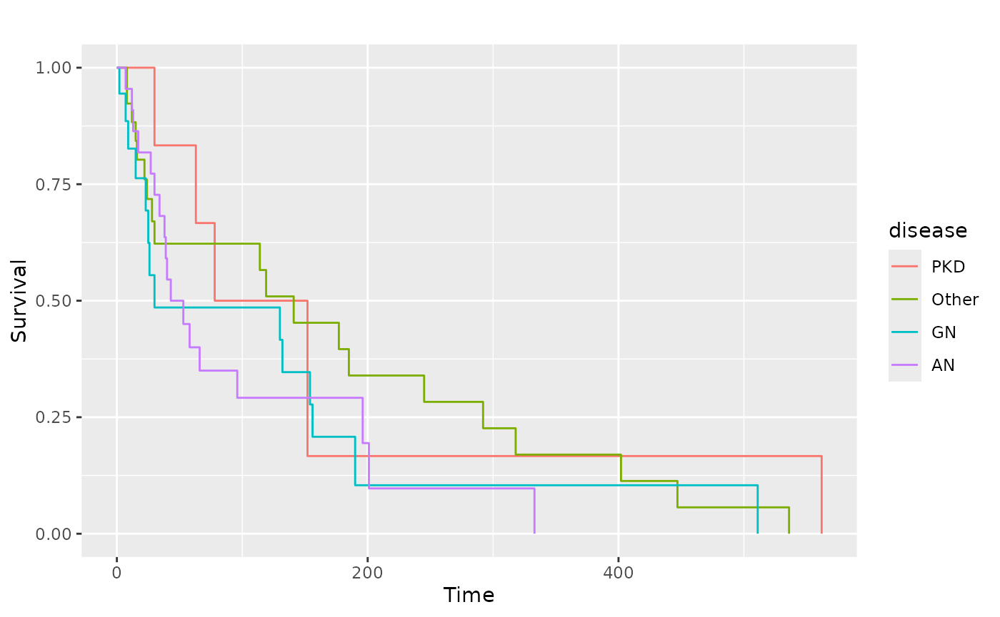

library(GGally)
#> Loading required package: ggplot2
#> Registered S3 method overwritten by 'GGally':
#> method from
#> +.gg ggplot2
GGally::ggsurv()
This function produces Kaplan-Meier plots using ggplot2.
As a first argument, ggsurv() needs a
survival::survfit() object. Default settings differ for
single stratum and multiple strata objects.
Single Stratum
require(ggplot2)
require(survival)
#> Loading required package: survival
require(scales)
#> Loading required package: scales
data(lung, package = "survival")
#> Warning in data(lung, package = "survival"): data set 'lung' not found
sf.lung <- survival::survfit(Surv(time, status) ~ 1, data = lung)
ggsurv(sf.lung)
Multiple Stratum
The legend color positions matches the survival order or each stratum, where the stratums that end at a lower value or time have a position that is lower in the legend.
Alterations
Since a ggplot2 object is returned, plot objects may be altered after the original creation.
Adjusting the legend
pl.sex +
ggplot2::guides(linetype = "none") +
ggplot2::scale_colour_discrete(
name = "Sex",
breaks = c(1, 2),
labels = c("Male", "Female")
)
#> Scale for colour is already present.
#> Adding another scale for colour, which will replace the existing scale.
Adjust the limits
data(kidney, package = "survival")
#> Warning in data(kidney, package = "survival"): data set 'kidney' not found
sf.kid <- survival::survfit(Surv(time, status) ~ disease, data = kidney)
pl.kid <- ggsurv(sf.kid, plot.cens = FALSE)
pl.kid
# Zoom in to first 80 days
pl.kid + ggplot2::coord_cartesian(xlim = c(0, 80), ylim = c(0.45, 1))Add text and remove the legend
pl.kid +
ggplot2::annotate(
"text",
label = c("PKD", "Other", "GN", "AN"),
x = c(90, 125, 5, 60),
y = c(0.8, 0.65, 0.55, 0.30),
size = 5,
colour = scales::pal_hue(
h = c(0, 360) + 15,
c = 100,
l = 65,
h.start = 0,
direction = 1
)(4)
) +
ggplot2::guides(color = "none", linetype = "none")